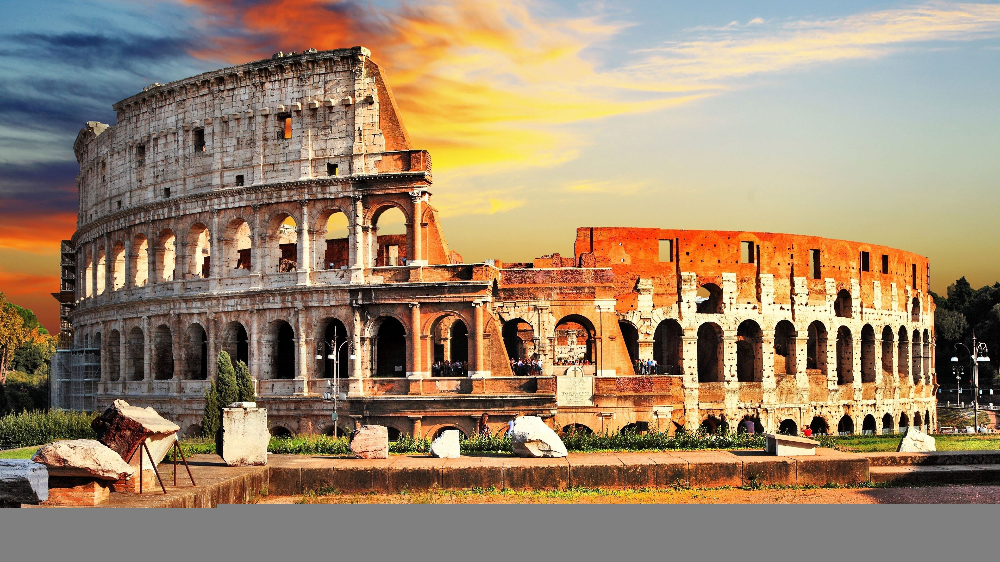

이탈리아 반도 중부지역 테베레 강 연안에 있는 도시로, 이탈리아의 수도이자 최대도시이고, 라치오의 중심 도시다.
과거 유럽의 중심이자 세계의 수도라고 불린 도시로, 세계 역사와 문화를 논할 때 절대 빠지지 않고 거론되는 도시이다.
현재는 잘 보존된 수많은 역사 유적들로 인해 전 세계의 대표적인 관광지라는 사실을 누구도 부인하지 않으며, 문화와 예술과 낭만의 도시로 자리잡았다.
세계 가톨릭 교회의 총본산 교황청의 소재지인 바티칸이 여기에 있다. 국제법상 바티칸은 별개 국가로 취급되기는 하나 이는 세속국가로부터 교황청의 독립성을 유지하기 위한 조치일 뿐이고, 상당한 경우에 '로마'라는 말 그 자체가 '교황' 또는 '교황청'과 동의어로 쓰일 정도이며, 역사·종교·문화적으로 법적인 로마 시와는 떼려야 뗄 수 없는 관계이다. 바티칸 본토 외에도 로마 시내 군데군데에 바티칸 시국령으로 간주되는 성당들이 몇 개 있다.역사적으로 유서 깊은 지역은 거리가 좁은 편이며, 과거의 영광의 흔적인 석조 기념물들과 함께 대부분 테베레 강의 동쪽에 위치해 있다.